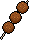
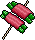
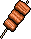
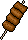
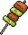
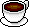
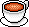
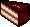
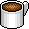

食事に関する表現２
料理についての会話
鍋料理
- これは何ですか？
- コンニャクですよ。
- え、こんな形の見たことないですよ。
- じゃあ、食べてみてください。
- この肉団子はもう食べられますか？
- いえ、まだ食べられません。
- 中がまだ生ですか？
- ええ。もう少し火を通した方がいいですね。
- カニなんて久しぶりですよ。
- 結構、値が張りますからね。
- でも、カニはおいしいですね。
- でも、食べにくいですよね。
- コンニャク［蒟蒻］【名詞】（こんにゃく〔3〕／こんにゃく＿〔4〕）
- 見たことがない［〜したことがない］／↔見たことがある［〜したことがある］【→ 経験をあらわす表現】
- じゃあ［※話しことばだけで使われる。書きことばでは「では」となる。］
- 食べてみる［〜てみる］
- 肉団子【名詞】（にくだんご〔3〕）
- 火を通す
- 〜方がいい。
- カニ［蟹］【名詞】（かに〔0〕）（→ 参考写真（カニ））
- 〜なんて【→例を示す表現】
- 結構【副詞】（けっこう〔1〕）
- 値が張る［※『かなり値段が高い』という意味の慣用句］
- 食べにくい［〜にくい］／↔食べやすい［〜やすい］
焼き鳥
- タレと塩、どっちが好きですか？
- ぼくは、塩の方が好きですね。
- ぼくも、どちらかというと塩ですね。
- そうですね。さっぱりしてますからね。
- これは鶏肉ですか？
- はい。手羽先のところですね。
- そのまま食べればいいですか？
- ええ、レモンを搾ってから食べてください。





- タレ【名詞】（たれ＿〔2〕）／タレ焼き【名詞】（たれやき〔0〕）
- 塩【名詞】（しお＿〔2〕）／塩焼き【名詞】（しおやき〔0〕）
- どっち【指示詞】（どっち〔1〕）［※書きことばやていねいな話しことばでは「どちら」となる］【→比較を求める表現】
- どちらかというと〜
- さっぱり【副詞】（さっぱり〔3〕）
- 手羽先【名詞】（てばさき〔0〕）
- レモン【名詞】（レモン〔1〕）［外来語］lemon［※「檸檬」とも書く］
（→ 参考写真（レモン））
- 搾る【１類動詞】（しぼる〔2〕）
- 〜してから〜する
コーヒー
- 角砂糖ずいぶんたくさん入れますね？
- そうですかね？
- 入れすぎない方がおいしいですよ。
- いや、甘いのが好きなんです。
- デザートの前にコーヒーはいかがですか？
- いや、コーヒーはあまり飲まないんですが。
- じゃあ、紅茶はどうですか？
- あ、それなら、いただきます。




- 角砂糖【名詞】（かくざとう〔3〕）
- ずいぶん［随分］【副詞】（ずいぶん〔1〕）
- 入れすぎない［〜すぎない］／↔入れすぎる［〜すぎる］
- 〜ない方が（良い）
- デザート【名詞】（デザート〔2〕）
- コーヒー【名詞】（コーヒー〔3〕）
- 紅茶【名詞】（こうちゃ〔0〕）
- …はいかがですか？
- あまり〜ない

{kind=link}
{kind=link}